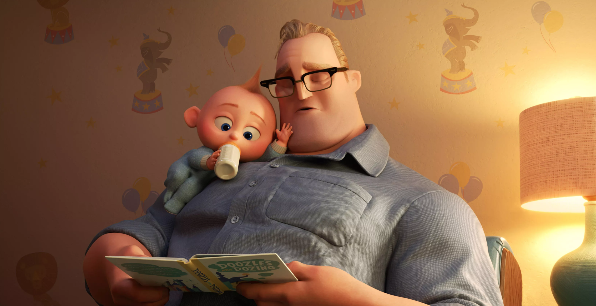

About Jack-Jack
Jack-Jack belongs to a family of superheroes. While his siblings each have one ability, Jack-Jack has many. He can shapeshift, crawl on walls, levitate, or transform into a monster. He doesn't have complete control over his powers yet, but with the help of a new suit crafted by Edna Mode, he is learning to fulfill his potential.
Bob reading Jack-Jack a bedtime story
Jack-Jack's Characteristics
- He's got lazer vision
- He's fought a racoon single-handed
- He loves cookies
Jack-Jack's Family
Click on the links below to read more about Jack-Jack's parents and siblings: